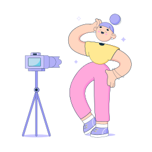

ABOUT ME


tara marie
hi there! my name is is tara, and i like to learn and create stuff.
i'm currently a student at
North Idaho College
in the Graphic and Web Design program.
i also specialize in landscape and portrait photography
and love front end UI development
as well as photoshop for magazine covers.
after the program, I hope to be hired as a UI web
developer and then specialize in JS and animation.
PORTFOLIO


SERVICES

Photography
i have always loved photography and continue to keep loving it.
one day I hope
to work for national geographic whether it is for photogrpahy or design.
i specialize in
landscape and portrait photography. north idaho college has purchased 3 of my photographs from an
art show and are now hung up at the school with a plaque.
the owner of blackwell gallery even
purchased one of my photgraphs for their personal colection.

Web Design
through north idaho college graphic design program, i have found a real love for UI front end web
design.
i hope to find a job doing front end web development, gaining more experience from that
first job, then furthering my knowledge to specialize in javascript frameworks and animation. i have
gained
experience with vscode and have learned css3, html5, and am beginning to learn animation and
javascript.

Graphic Design
i am currently enrolled at north idaho college graphic design program and have learned so much.
i have learned the adobe suite and am continuing on bettering my skills specifically in illustrator,
photoshop, indesign, and after effects.
i have found that i really enjoy making magazine covers
in photoshop and hope to one day work for a big magazine doing projects like that.
i am also
very interested in business branding and product design.